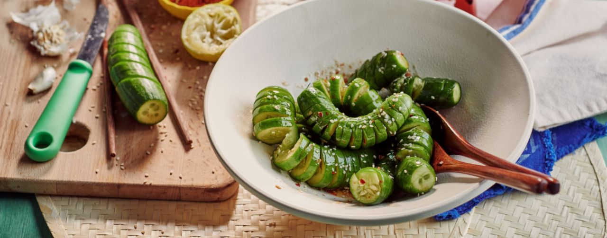

Asiatischer Gurkensalat mit Sesamöl
Zutaten
| 8 | Minigurken |
| 1 | Limette |
| 1 | Knoblauchzehe |
| 2 EL | Sesamöl |
| 3 EL | Sojasauce |
| 2 EL | weißes Sesam |
| 1 EL | Zucker |
| gemahlenes Chilli |
Zubereitung
- Gurken waschen und Enden abschneiden. Gurke jeweils zwischen 2 Essstäbchen legen. Gurken anschließend in Scheiben einschneiden, sodass sie unten noch zusammenhängen. Gurken mit den Einschnitten auf das Schneidebrett drehen und erneut leicht schräg in Scheiben einschneiden. Durch diese Schneidetechnik wird die Gurke leicht aufgefächert und noch zusammengehalten.
- Knoblauch schälen und fein hacken. Limette halbieren und Saft auspressen.
- In einer Schüssel Sesamöl, Sojasauce, 2 EL Limettensaft, Knoblauch, Chili und Zucker verrühren. Gurken gut mit dem Dressing vermengen und ca. 10 Min. ziehen lassen.
- Asiatischen Gurkensalat mit Sesam bestreuen und servieren.